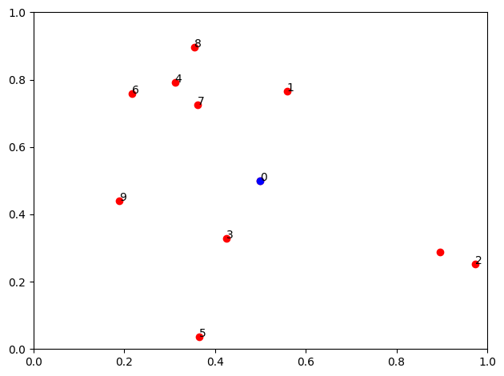
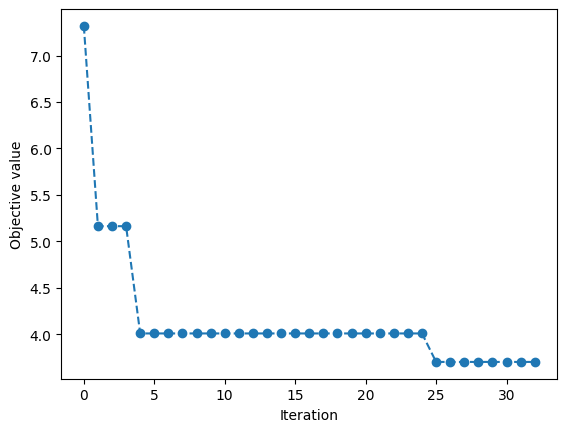
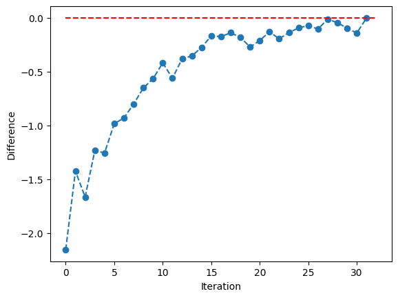
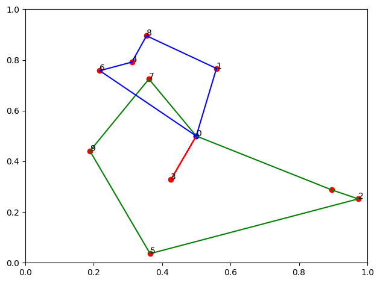

Column Generation for VRP#
Ref. https://www.brainpad.co.jp/doors/contents/01_tech_2020-10-23-000003/
import numpy as np
import matplotlib.pyplot as plt
import pulp
# Problem parameters
num_customers = 10
coordinates_depot = np.array([0.5, 0.5])
coordinates_customers = np.random.rand(num_customers, 2)
coordinates = np.vstack((coordinates_depot, coordinates_customers))
weights = np.random.randint(5, 15, num_customers)
vehicle_capacity = 40
plt.scatter(coordinates[:, 0], coordinates[:, 1], c='r')
plt.scatter(coordinates_depot[0], coordinates_depot[1], c='b')
for i in range(num_customers):
plt.annotate(i, (coordinates[i, 0], coordinates[i, 1]))
plt.xlim(0, 1)
plt.ylim(0, 1)
plt.tight_layout()
plt.show()

# calculate costs
costs = np.zeros((num_customers + 1, num_customers + 1))
for i in range(num_customers + 1):
for j in range(num_customers + 1):
if i == j:
continue
costs[i, j] = np.linalg.norm(coordinates[i] - coordinates[j])
costs[j, i] = costs[i, j]
def create_init_routes() -> list[tuple[int]]:
# Create a route for each customer
return [(0, i, 0) for i in range(1, num_customers + 1)]
def calculate_route_cost(route: tuple[int]) -> float:
return sum(costs[route[i], route[i + 1]] for i in range(len(route) - 1))
def solve_dual_problem(routes: list[tuple[int]], route_costs: dict[tuple[int], float]) -> list[float]:
problem = pulp.LpProblem("DualProblem", pulp.LpMaximize)
# Variables
y = pulp.LpVariable.dicts("y", range(num_customers), lowBound=0, cat=pulp.LpContinuous)
# Objective function
problem += pulp.lpSum([y[i] for i in range(num_customers)])
# Constraints
for route in routes:
problem += pulp.lpSum([y[i - 1] for i in route[1:-1]]) <= route_costs[route]
status = problem.solve(pulp.PULP_CBC_CMD(msg=0, timeLimit=60, threads=8))
if status != 1:
raise Exception("Dual problem not solved")
return [0] + [y[i].varValue for i in range(num_customers)]
def solve_pricing_problem(benefits: list[float], big_M: int = 100) -> tuple[int]:
problem = pulp.LpProblem("PricingProblem", pulp.LpMinimize)
# Variables
z = pulp.LpVariable.dicts(
"z",
((i, j) for i in range(num_customers + 1) for j in range(num_customers + 1)),
lowBound=0,
upBound=1,
cat=pulp.LpInteger
)
u = pulp.LpVariable.dicts("u", range(num_customers), lowBound=0, upBound=num_customers, cat=pulp.LpInteger)
# Objective function
problem += pulp.lpSum([(costs[i][j] - benefits[j]) * z[i, j] for i in range(num_customers + 1) for j in range(num_customers + 1) if i != j])
# Constraints
problem += pulp.lpSum([z[0, j] for j in range(1, num_customers + 1)]) == 1
problem += pulp.lpSum([z[i, 0] for i in range(1, num_customers + 1)]) == 1
for i in range(1, num_customers + 1):
problem += pulp.lpSum([z[i, j] for j in range(num_customers + 1)]) <= 1
for j in range(1, num_customers + 1):
problem += pulp.lpSum([z[i, j] for i in range(num_customers + 1)]) <= 1
for i in range(1, num_customers + 1):
problem += pulp.lpSum([z[i, j] for j in range(num_customers + 1) if i != j]) == pulp.lpSum([z[j, i] for j in range(num_customers + 1) if i != j])
for i in range(1, num_customers + 1):
for j in range(1, num_customers + 1):
problem += u[i - 1] + num_customers * (1 - z[i, j]) <= u[j - 1]
problem += pulp.lpSum([weights[j - 1] * z[i, j] for i in range(num_customers + 1) for j in range(1, num_customers + 1) if i != j]) <= vehicle_capacity
status = problem.solve(pulp.PULP_CBC_CMD(msg=0, timeLimit=60, threads=8))
if status != 1:
raise Exception("Pricing problem not solved")
routes = [0]
while True:
for j in range(num_customers + 1):
if z[routes[-1], j].varValue == 1:
routes.append(j)
break
if routes[-1] == 0:
break
return tuple(routes)
def solve_master_problem(routes: list[tuple[int]], route_costs: dict[tuple[int], float]) -> tuple[list[tuple[int]], float]:
problem = pulp.LpProblem("MasterProblem", pulp.LpMinimize)
num_routes = len(routes)
# Variables
x = pulp.LpVariable.dicts("x", range(num_routes), lowBound=0, upBound=1, cat=pulp.LpInteger)
# Objective function
problem += pulp.lpSum([route_costs[route] * x[r] for r, route in enumerate(routes)])
# Constraints
for i in range(1, num_customers + 1):
problem += pulp.lpSum([x[r] for r, route in enumerate(routes) if i in route]) == 1
status = problem.solve(pulp.PULP_CBC_CMD(msg=0, timeLimit=60, threads=8))
if status != 1:
raise Exception("Master problem not solved")
routes_selected = [routes[r] for r in range(num_routes) if x[r].varValue == 1]
objective_value = pulp.value(problem.objective)
return routes_selected, objective_value
max_iterations = 500
routes_hist = []
objective_values_hist = []
diff_hist = []
routes = create_init_routes()
route_costs = {route: calculate_route_cost(route) for route in routes}
selected_routes, objective_value = solve_master_problem(routes, route_costs)
objective_values_hist.append(objective_value)
print(f"Initial routes: {selected_routes} with objective value {objective_value}")
for t in range(max_iterations):
print(f"Iteration {t}")
benefits = solve_dual_problem(routes, route_costs)
route_next = solve_pricing_problem(benefits)
route_cost_next = calculate_route_cost(route_next)
route_costs[route_next] = route_cost_next
diff = route_cost_next - sum(benefits[i] for i in route_next)
diff_hist.append(diff)
print(f"difference: {diff}")
if abs(diff) <= 1e-6:
print("Finished!!!")
break
routes.append(route_next)
routes_hist.append(routes)
print(f"Route added: {route_next} with cost {route_cost_next}")
# Solve the master problem
selected_routes, objective_value = solve_master_problem(routes, route_costs)
objective_values_hist.append(objective_value)
print(f"Currnet routes: {selected_routes} with objective value {objective_value}")
# Solve the master problem
selected_routes, objective_value = solve_master_problem(routes, route_costs)
objective_values_hist.append(objective_value)
print(f"Selected routes: {selected_routes} with objective value {objective_value}")
Initial routes: [(0, 1, 0), (0, 2, 0), (0, 3, 0), (0, 4, 0), (0, 5, 0), (0, 6, 0), (0, 7, 0), (0, 8, 0), (0, 9, 0), (0, 10, 0)] with objective value 7.319097017790974
Iteration 0
difference: -2.1555108729741654
Route added: (0, 4, 8, 1, 2, 10, 0) with cost 1.8969801670258342
Currnet routes: [(0, 3, 0), (0, 5, 0), (0, 6, 0), (0, 7, 0), (0, 9, 0), (0, 4, 8, 1, 2, 10, 0)] with objective value 5.163586104037494
Iteration 1
difference: -1.4247160143311586
Route added: (0, 2, 5, 9, 6, 1, 0) with cost 2.5546680256688417
Currnet routes: [(0, 3, 0), (0, 5, 0), (0, 6, 0), (0, 7, 0), (0, 9, 0), (0, 4, 8, 1, 2, 10, 0)] with objective value 5.163586104037494
Iteration 2
difference: -1.6657925620295282
Route added: (0, 8, 4, 6, 9, 0) with cost 1.268314407970472
Currnet routes: [(0, 3, 0), (0, 5, 0), (0, 6, 0), (0, 7, 0), (0, 9, 0), (0, 4, 8, 1, 2, 10, 0)] with objective value 5.163586104037494
Iteration 3
difference: -1.2332135484064335
Route added: (0, 10, 2, 5, 3, 0) with cost 1.6664960515935665
Currnet routes: [(0, 1, 0), (0, 7, 0), (0, 8, 4, 6, 9, 0), (0, 10, 2, 5, 3, 0)] with objective value 4.009072513590214
Iteration 4
difference: -1.256706234177583
Route added: (0, 1, 4, 6, 7, 0) with cost 1.032940695822417
Currnet routes: [(0, 1, 0), (0, 7, 0), (0, 8, 4, 6, 9, 0), (0, 10, 2, 5, 3, 0)] with objective value 4.009072513590214
Iteration 5
difference: -0.9845332708492998
Route added: (0, 1, 8, 7, 5, 0) with cost 1.8583023291507001
Currnet routes: [(0, 1, 0), (0, 7, 0), (0, 8, 4, 6, 9, 0), (0, 10, 2, 5, 3, 0)] with objective value 4.009072513590214
Iteration 6
difference: -0.9308022088808507
Route added: (0, 9, 7, 8, 1, 10, 0) with cost 2.097264451119149
Currnet routes: [(0, 1, 0), (0, 7, 0), (0, 8, 4, 6, 9, 0), (0, 10, 2, 5, 3, 0)] with objective value 4.009072513590214
Iteration 7
difference: -0.8007210938119678
Route added: (0, 9, 7, 8, 1, 2, 0) with cost 2.2569604261880323
Currnet routes: [(0, 1, 0), (0, 7, 0), (0, 8, 4, 6, 9, 0), (0, 10, 2, 5, 3, 0)] with objective value 4.009072513590214
Iteration 8
difference: -0.6516175022806403
Route added: (0, 3, 5, 9, 7, 0) with cost 1.5236574777193599
Currnet routes: [(0, 1, 0), (0, 7, 0), (0, 8, 4, 6, 9, 0), (0, 10, 2, 5, 3, 0)] with objective value 4.009072513590214
Iteration 9
difference: -0.5656560068211813
Route added: (0, 7, 6, 8, 1, 0) with cost 1.1204331131788186
Currnet routes: [(0, 1, 0), (0, 7, 0), (0, 8, 4, 6, 9, 0), (0, 10, 2, 5, 3, 0)] with objective value 4.009072513590214
Iteration 10
difference: -0.4185834067434757
Route added: (0, 3, 9, 7, 1, 0) with cost 1.2566806932565244
Currnet routes: [(0, 1, 0), (0, 7, 0), (0, 8, 4, 6, 9, 0), (0, 10, 2, 5, 3, 0)] with objective value 4.009072513590214
Iteration 11
difference: -0.5609949009806914
Route added: (0, 10, 2, 5, 9, 7, 0) with cost 2.218572749019309
Currnet routes: [(0, 1, 0), (0, 7, 0), (0, 8, 4, 6, 9, 0), (0, 10, 2, 5, 3, 0)] with objective value 4.009072513590214
Iteration 12
difference: -0.3802903672748388
Route added: (0, 5, 9, 4, 7, 1, 0) with cost 1.8549488807251613
Currnet routes: [(0, 1, 0), (0, 7, 0), (0, 8, 4, 6, 9, 0), (0, 10, 2, 5, 3, 0)] with objective value 4.009072513590214
Iteration 13
difference: -0.35336051806508184
Route added: (0, 7, 4, 8, 1, 0) with cost 0.9744812619349181
Currnet routes: [(0, 1, 0), (0, 7, 0), (0, 8, 4, 6, 9, 0), (0, 10, 2, 5, 3, 0)] with objective value 4.009072513590214
Iteration 14
difference: -0.2750820195347248
Route added: (0, 9, 5, 2, 10, 1, 0) with cost 2.348009460465275
Currnet routes: [(0, 1, 0), (0, 7, 0), (0, 8, 4, 6, 9, 0), (0, 10, 2, 5, 3, 0)] with objective value 4.009072513590214
Iteration 15
difference: -0.16664809537668557
Route added: (0, 9, 3, 5, 10, 0) with cost 1.9143395946233142
Currnet routes: [(0, 1, 0), (0, 7, 0), (0, 8, 4, 6, 9, 0), (0, 10, 2, 5, 3, 0)] with objective value 4.009072513590214
Iteration 16
difference: -0.17424509150569767
Route added: (0, 9, 3, 2, 10, 0) with cost 1.6663603684943022
Currnet routes: [(0, 1, 0), (0, 7, 0), (0, 8, 4, 6, 9, 0), (0, 10, 2, 5, 3, 0)] with objective value 4.009072513590214
Iteration 17
difference: -0.13837662208835622
Route added: (0, 9, 6, 4, 7, 0) with cost 1.0819441479116438
Currnet routes: [(0, 1, 0), (0, 7, 0), (0, 8, 4, 6, 9, 0), (0, 10, 2, 5, 3, 0)] with objective value 4.009072513590214
Iteration 18
difference: -0.18176051988195985
Route added: (0, 9, 6, 8, 1, 0) with cost 1.3435472301180402
Currnet routes: [(0, 1, 0), (0, 7, 0), (0, 8, 4, 6, 9, 0), (0, 10, 2, 5, 3, 0)] with objective value 4.009072513590214
Iteration 19
difference: -0.27031183853678153
Route added: (0, 1, 4, 9, 3, 0) with cost 1.3428079414632184
Currnet routes: [(0, 1, 0), (0, 7, 0), (0, 8, 4, 6, 9, 0), (0, 10, 2, 5, 3, 0)] with objective value 4.009072513590214
Iteration 20
difference: -0.21078662972214723
Route added: (0, 9, 6, 8, 7, 0) with cost 1.2635911502778527
Currnet routes: [(0, 1, 0), (0, 7, 0), (0, 8, 4, 6, 9, 0), (0, 10, 2, 5, 3, 0)] with objective value 4.009072513590214
Iteration 21
difference: -0.1286863395303648
Route added: (0, 2, 1, 4, 6, 9, 0) with cost 2.178647980469635
Currnet routes: [(0, 1, 0), (0, 7, 0), (0, 8, 4, 6, 9, 0), (0, 10, 2, 5, 3, 0)] with objective value 4.009072513590214
Iteration 22
difference: -0.1948363272383613
Route added: (0, 9, 6, 4, 1, 0) with cost 1.2560548127616387
Currnet routes: [(0, 1, 0), (0, 7, 0), (0, 8, 4, 6, 9, 0), (0, 10, 2, 5, 3, 0)] with objective value 4.009072513590214
Iteration 23
difference: -0.13671430459924805
Route added: (0, 9, 6, 4, 1, 10, 0) with cost 2.018952005400752
Currnet routes: [(0, 1, 0), (0, 7, 0), (0, 8, 4, 6, 9, 0), (0, 10, 2, 5, 3, 0)] with objective value 4.009072513590214
Iteration 24
difference: -0.09304578088139004
Route added: (0, 6, 4, 8, 1, 0) with cost 1.10917710911861
Currnet routes: [(0, 3, 0), (0, 10, 2, 5, 9, 7, 0), (0, 6, 4, 8, 1, 0)] with objective value 3.702534247292998
Iteration 25
difference: -0.07113789087480704
Route added: (0, 9, 3, 5, 2, 0) with cost 2.057386749125193
Currnet routes: [(0, 3, 0), (0, 10, 2, 5, 9, 7, 0), (0, 6, 4, 8, 1, 0)] with objective value 3.702534247292998
Iteration 26
difference: -0.10418994288579642
Route added: (0, 9, 5, 2, 10, 0) with cost 1.9385249331142038
Currnet routes: [(0, 3, 0), (0, 10, 2, 5, 9, 7, 0), (0, 6, 4, 8, 1, 0)] with objective value 3.702534247292998
Iteration 27
difference: -0.010418116070323613
Route added: (0, 10, 1, 7, 6, 9, 0) with cost 2.0197898939296763
Currnet routes: [(0, 3, 0), (0, 10, 2, 5, 9, 7, 0), (0, 6, 4, 8, 1, 0)] with objective value 3.702534247292998
Iteration 28
difference: -0.046431626343242716
Route added: (0, 9, 3, 0) with cost 0.7658265636567573
Currnet routes: [(0, 3, 0), (0, 10, 2, 5, 9, 7, 0), (0, 6, 4, 8, 1, 0)] with objective value 3.702534247292998
Iteration 29
difference: -0.0941546403570861
Route added: (0, 7, 4, 8, 1, 2, 0) with cost 1.897074429642914
Currnet routes: [(0, 3, 0), (0, 10, 2, 5, 9, 7, 0), (0, 6, 4, 8, 1, 0)] with objective value 3.702534247292998
Iteration 30
difference: -0.14200854818574515
Route added: (0, 9, 5, 3, 0) with cost 1.243609661814255
Currnet routes: [(0, 3, 0), (0, 10, 2, 5, 9, 7, 0), (0, 6, 4, 8, 1, 0)] with objective value 3.702534247292998
Iteration 31
difference: -8.065081935626495e-09
Finished!!!
Selected routes: [(0, 3, 0), (0, 10, 2, 5, 9, 7, 0), (0, 6, 4, 8, 1, 0)] with objective value 3.702534247292998
plt.plot(objective_values_hist, 'o--')
plt.xlabel("Iteration")
plt.ylabel("Objective value")
plt.show()

plt.plot(diff_hist, 'o--')
plt.hlines(0, 0, len(diff_hist), colors='r', linestyles='dashed')
plt.xlabel("Iteration")
plt.ylabel("Difference")
plt.show()

# show the selected routes
plt.scatter(coordinates[:, 0], coordinates[:, 1], c='r')
plt.scatter(coordinates_depot[0], coordinates_depot[1], c='b')
for i in range(num_customers):
plt.annotate(i, (coordinates[i, 0], coordinates[i, 1]))
colorlist = ["r", "g", "b", "c", "m", "y", "k", "w"]
for r, route in enumerate(selected_routes):
plt.plot(
[coordinates[i, 0] for i in route],
[coordinates[i, 1] for i in route],
c=colorlist[r % len(colorlist)]
)
plt.xlim(0, 1)
plt.ylim(0, 1)
plt.tight_layout()
plt.show()
